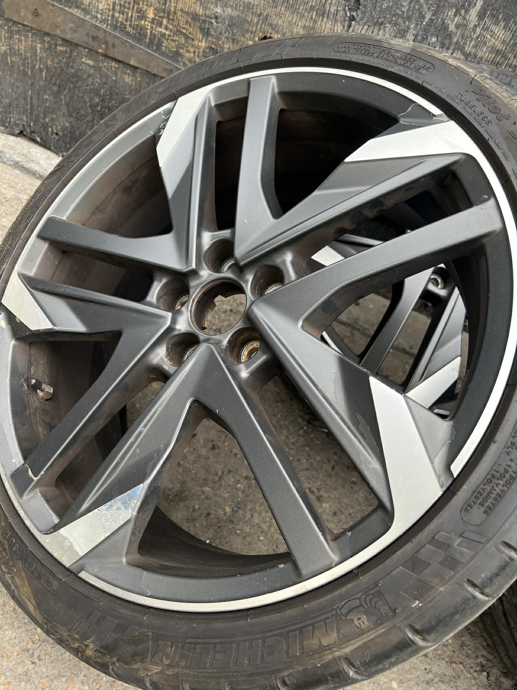
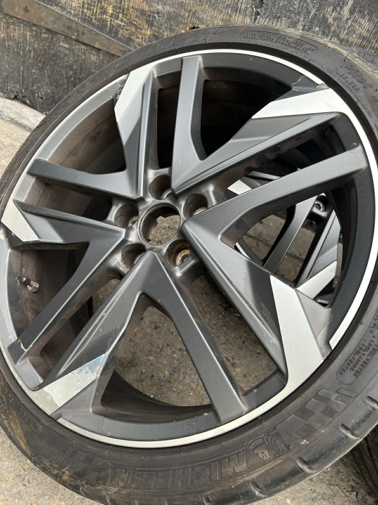

Guide Prices — Prices vary depending on location and wheel condition. Send photos for an accurate quote.
Alloy Wheel Refurbishment
£60–£65 per wheelComplete restoration of your alloy wheels to factory-fresh condition. Our comprehensive refurbishment process removes all signs of wear, damage, and deterioration, bringing your wheels back to life.
What This Fixes:
- General wear and tear from daily driving
- Surface scratches and scuff marks
- Faded or discoloured finishes
- Minor impact damage and imperfections
- Oxidation and weathering
Perfect For:
All vehicle types including cars, vans, SUVs, and 4x4s. Ideal if you're preparing a vehicle for sale, want to refresh tired-looking wheels, or simply take pride in your motor.
Diamond Cut Alloy Repair
Smart Repair: £85–£95 | Full Diamond Cut: £120Specialist diamond cutting service for precision-machined alloy wheels. Using professional CNC lathes, we recreate that mirror-finish shine that makes premium wheels stand out.
What This Fixes:
- Corrosion on diamond cut faces
- Lacquer peel and flaking
- Kerb damage on machined surfaces
- Oxidation and clouding
- Loss of original mirror finish
Perfect For:
High-end vehicles with diamond cut finish wheels including Audi, BMW, Mercedes, Volkswagen, and other premium manufacturers. If your wheels have that distinctive machined face with a clear lacquer coat, this is the service you need.
Brake Caliper Painting
£30–£35 per caliperProfessional brake caliper refinishing to complement your wheels. Transform the look of your brakes with a high-quality, heat-resistant finish in your choice of colour.
What We Offer:
- Full colour range available
- Heat-resistant automotive paint
- Professional preparation and finish
- Matching to wheel colour or contrasting
Popular Colours:
Red, yellow, and black are the most popular choices. We can match virtually any colour to complement your vehicle's aesthetic.
Welding – Crack Repair
£100–£120Expert alloy wheel welding for cracked or damaged wheels. Not every crack means your wheel is scrap — many can be professionally repaired.
What We Fix:
- Hairline cracks
- Impact cracks from potholes
- Stress fractures
- Bead damage requiring welding
Safety First:
All crack repairs are assessed for safety before work begins. If a wheel is too damaged to repair safely, we'll tell you honestly.
Welding – Straightening
£90–£110Buckled or bent wheel? Our specialist straightening service can often restore the wheel to true, eliminating vibrations and uneven tyre wear.
What We Fix:
- Buckled rims from pothole damage
- Bent wheel edges
- Wheels causing vibration
- Slow punctures from rim damage
The Process:
Using specialist hydraulic equipment, we carefully reshape the wheel back to manufacturer tolerances. The wheel is then checked and tested before refinishing if required.
Our Work


 
